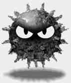
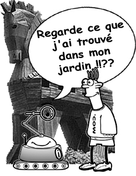
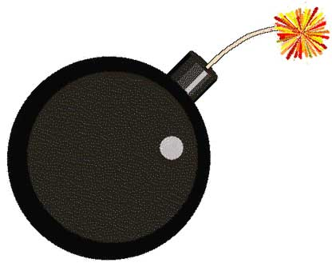

Bienvenue sur ce site dédié au piratage informatique dans le cadre d'un projet de l'ISIMM (LA 1 INFO). Ce site a été créé par Houssem Sakli. |
Le Piratage Informatique |
|
|
Bienvenue sur ce site dédié au piratage informatique dans le cadre d'un projet de l'ISIMM (LA 1 INFO). Ce site a été créé par Houssem Sakli. |
Le Piratage Informatique |
|
Un virus est un programme qui se reproduit en s'insérant partiellement dans d'autres fichiers.
Tant que le virus n'a pas été executé, vous ne risquez rien. Mais, lorsqu'il est activé, il peut vous rendre la vie dure.
Tandis que certains virus vont tout simplement se manifester par l'apparition d'un message sur votre ordinateur, d'autres
vont être dangereux. Par exemple, ils pourront supprimer des données, formater un disque dur. La majorité des virus
se propagent par courrier électronique en pièce-jointe.
Néanmoins, on peut classer les virus en plusieurs catégories:

Un ver (en Anglais worm) est un programme qui se propage d'ordinateur à ordinateur via un réseau comme l'Internet. Ainsi, contrairement à un virus, le vers n'a pas besoin d'un programme hôte pour assurer sa reproduction. Son poids est très léger, ce qui lui permet de se propager à une vitesse impressionante sur un réseau, et pouvant donc saturer ce dernier.
Tant que le ver n'a pas été executé, vous ne risquez rien. Mais, lorsqu'il est activé, il peut vous rendre la vie dure.
Ils vont pouvoir avoir des fonctionnalités malsaintes comme pour les virus, mais ils vont aussi
utiliser les ressources de votre réseau, pouvant amener ce dernier à saturation.
Un spyware, ou logiciel espion, est un logiciel nuisible qui transmet à des tiers des informations contenues dans votre ordinateur.
Les spywares sont souvent présents dans des gratuiciels (différents des logiciels libres), ou des partagiciels.
En général les logiciels à code source libre comme Mozilla FireFox n'en contiennent aucun.
La diffusion de données personnelles, qui sont ensuite utilisées par des entreprises de publicités. Par exemple, le spyware peut envoyer la liste des sites consultés ainsi que vos adresses mail, ce qui permet ensuite de cibler vos centres d'intérêts.
La présence d'un grand nombre de spyware sur un ordinateur provoque une diminution des performances. En effet ces logiciels étant lancé dès le démarrage, ils nécessitent des ressources systèmes (en mémoire et processeur).
Un Hijacker, ou pirate de navigateur, utilise les failles de sécurité d'internet explorer pour s'installer sur votre ordinateur.
Ce genre de programme s'installe donc juste en surfant sur le net, souvent sur des sites "louches" (sites de piratage, de patch nocd pour jeux, de cracking, ou encore sites à caractére pornographique ...).
Une fois installé, le hijacker peut se comporter comme un spyware et envoyer des informations sur le net, mais une grande partie des Hijackers modifie simplement des caractéristiques de votre système: par exemple en changeant la page de démarrage d'internet explorer, votre fond d'écran...
|
Un troyen (en anglais trojan horse) tire son nom du mythe du cheval de Troie. Ce programme a une apparence saine, souvent même attirante, mais lorsqu'il est exécuté, il effectue, discrètement ou pas, des actions supplémentaires. Ces actions peuvent être de toute forme, comme l'installation d'une backdoor par exemple. Qu'est-ce que je risque?
Après avoir exécuté le troyen, on peut tout craindre. Un attaquant pourra rentrer sur votre système si le troyen a installé une
backdoor. Ces dernières années ont vu l'arrivée d'un nouveau type de troyens, très à la
mode aujourd'hui. Ce troyen se compose d'un programme client et d'un autre serveur. Le pirate envoie le serveur à la victime.
Lorsque celle-ci a exécuté le programme, le pirate, à l'aide du programme client, pourra contrôler l'ordinateur cible. Souvent
même, ce genre de programme offre au pirate plus de fonctionnalités que l'utilisateur en possède lui-même sur son ordinateur. BackdoorUne backdoor (en français, une porte dérobée) est un moyen laissé par une personne malveillante pour revenir dans un système. Par exemple, un pirate, après avoir pénétré une machine peut se créer un compte secret. Ainsi, il pourra revenir la prochaine fois facilement. Une backdoor a de multiples raisons d'exister, comme l'espionnage ou pour lancer des attaques à partir de cette machine et ainsi vous faire porter le chapeau. |
 |
|
Une bombe logique est un troyen qui, une fois exécutée, produira ses effets à un moment précis. Par exemple, la bombe logique Tchernobyl s'est activée le 26 avril 1999 (jour du 13ème anniversaire de la catastrophe nucléaire en Bulgarie), mais la bombe peut également attendre une combinaison de touches bien précise de la part de l'utilisateur pour se déclencher ou attendre qu'un fichier s'exécute. Le choix des programmeurs quant à son déclenchement est sans limite. |
 |
Il n'y a pas de solutions miracles, mais voici quelques conseils qui vous permettront de vous prémunir de ces menaces:
Un hoax (canular) est un courrier électronique contenant une fausse information. Si certains sont inoffensifs, d'autres peuvent être dangereux. Voici les différents types de hoaxs qui existent:
Souvent les hoaxes incitent les utilisateurs à faire suivre
le courrier à tous leurs contacts.
Un hoax, par définition, n'est pas dangereux pour un ordinateur, à condition tout de même, de ne pas faire bêtement ce que dit le mail, notamment pour
les viroax.
Mais l'hoax encombre inutilement les réseaux,
encombre les boîtes aux lettres, etc. Aussi ne faut-il pas faire suivre ce genre de courrier.
Le site hoaxbuster recense tous les hoaxes identifiés sur le net. Allez-y faire un tour si vous avez
un doute quant à la crédibilité d'un courrier électronique.
Le spamming (ou encore pourriel, courrier rebut) consiste à envoyer des messages appelés "spam" à une ou plusieurs personnes. Ces spams sont
souvent d'ordre publicitaire. Tous les points suivant sont considérés comme du spamming.
Bien sûr, vous ne risquez rien. Ce n'est pas du tout dangereux. Mais ce n'est vraiment pas agréable de recevoir du spam dans sa boîte aux lettres. Cela fait perdre du temps, sans compter les risques d'effacer un mauvais message en se trompant de message.
Vous pouvez aussi changer de logiciel de messagerie et adopter Mozilla Thunderbird qui élimine les spams intelligement.
Le mailbombing s'apparente un peu au spamming puisqu'il a pour but de provoquer une gêne pour la victime. Mais cette fois, le but n'est pas le même, il s'agit de saturer la boîte aux lettres électronique de la victime en envoyant plusieurs mails, des milliers par exemple.
En étant victime de mailbombing, vous risquez de perdre votre boîte. Pire encore serait que les mails soient infectés par des virus. Ainsi, la victime ne peut plus se servir de sa boîte.
Le phishing, très à la mode aujourd'hui, consiste à soutirer des informations confidentielles (comme les codes bancaires, ...) auprès des clients par usurpation d'identité.
Lorsque par exemple, vous allez sur un site de e-commerce pour achater en ligne, le site va vous demander votre nom, le numéro de la carte bleue, la date d'expiration. Ainsi, si un scammer (arnaqueur) reçoit ces informations, il pourra payer en ligne en utilisant votre compte.